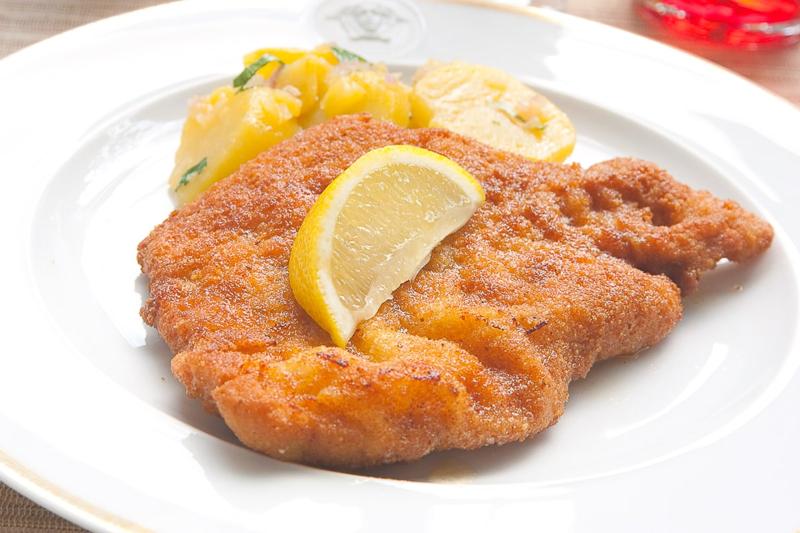

Home
Schnitzel

Description
What is Schnitzel? Schnitzel: a thin slice of meat, usually tenderized by pounding, coated in flour, eggs, and breadcrumbs, and then pan-fried until perfectly crispy with a deep golden brown crispy breading that covers the tender, juicy meat.
Ingredients
- breadcrumbs
- flower
- eggs
- pork cutlet
- salt
- pepper
Instructions
- Prepare flower, whisked eggs and breadcrumbs in three separate plates.
- Season the pork cutlet.
- Bread the pork cutlet.
- Get a pan of neutral oil to medium high heat.
- Cook steak in oil until the breading has a good colour.